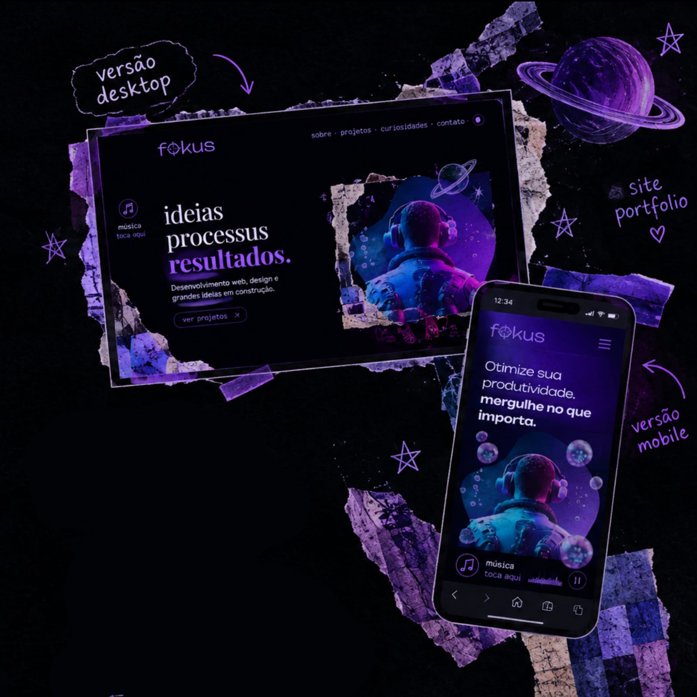

Fokus
Desenvolvimento Web - JavaScript
O Fokus nasceu de uma ideia simples: criar uma ferramenta que ajudasse a tornar o momento de estudo mais organizado e facilitasse a concentração. A proposta é transformar o temporizador em algo mais completo, acompanhando não só o período de foco, mas também os momentos de descanso.
Processo
O Fokus foi desenvolvido durante meus estudos na Alura, como uma forma de aprender novos conceitos de desenvolvimento web e colocá-los em prática através de um projeto funcional.
A partir da estrutura do projeto, fui explorando o JavaScript para entender como criar um temporizador com diferentes contextos: foco, descanso curto e descanso longo. Cada contexto também altera a aparência da página, fazendo com que a interface acompanhe o momento selecionado.
Durante o desenvolvimento, também aprendi a trabalhar com eventos e manipulação do DOM para controlar as interações da página. Além disso, explorei a utilização de áudio para reproduzir músicas e sons de acordo com as ações do usuário e com o encerramento do temporizador.
Como próxima etapa, pretendo ampliar o projeto adicionando uma funcionalidade de tarefas, permitindo que o usuário organize aquilo que deseja realizar durante seus períodos de foco.
Tecnologias
